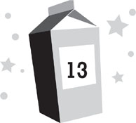

Lunar day 217
High noon
“Dashiell! Run!” Kira ordered. And then, just in case I didn’t understand, she grabbed my hand and yanked me down the hall.
“Go get him!” Sonja ordered Patton, while Lars and Lily cheered him on enthusiastically.
Patton obediently chased after us.
Kira and I loped through the base as quickly as we could in our bizarre, low-gravity way. On a normal day, I might have yelled for help, but all the other adults were out on the lunar surface—except Dr. Marquez, who wouldn’t have been able to defend me against a butterfly. Luring Patton back into the bathroom and making another attempt to suck his face off with the Urinator didn’t seem likely; the only other thing I could think of was to get to my residence, lock the door, and pray Patton wasn’t strong enough to break it down.
In the meantime, while I fled, I tried to reason with the bully. “Come on!” I yelled. “I’m sorry for using the Urinator on you. I was only trying to defend myself. I never would have done it if you hadn’t attacked me first!”
“Know what I’m gonna do when I catch you?” Patton roared. “I’m gonna shove your whole head down the toilet!”
So much for reason.
Kira and I bounded past the gym, the medical bay (which I hoped I wouldn’t be needing soon), and the rec room. Violet and Kamoze were so riveted to Squirrel Force, they didn’t even notice us go past. “Go SuperSquirrel!” I heard Violet cheer. “Save the day!”
I couldn’t tell where Patton was behind me—I didn’t want to chance looking back—but his guttural grunts and screams seemed to be getting closer. It sounded like I was being chased by an animal rather than a human.
Normally, to get to my second-floor room, I would have pulled a U-turn in the air-lock staging area and climbed the stairs to the catwalk, but today that seemed way too slow. I glanced at Kira and realized she had the same idea.
Both of us launched ourselves at the outer wall of the rec room and sprang off it. The moon’s low gravity might suck for running, but you can make some superhero-style moves in it. Kira and I both sailed up through the air across the hall and caught the catwalk rail. We were right by the doors to our rooms. Kira sprang over the rail with ease and I followed. . . .
Only, Patton lunged upward and snagged my foot right before it cleared the railing, then dragged me back down. He lost his footing, though, and fell flat on his back. I landed right on top of him. I was hoping I’d at least hit hard enough to hurt him. Instead I landed so softly, I might as well have been a bag of potato chips.
Patton clamped his meaty hand around my neck.
“No!” Kira screamed. “Let him go!”
Patton’s reptile eyes flicked toward Kira, then narrowed evilly. Still looking at her, he did exactly the opposite of what she’d asked, squeezing my neck tightly.
I gasped for breath, but found none.
Above me on the catwalk, I heard Dr. Marquez emerge from his room along with Roddy.
“Dr. Marquez!” Kira cried. “Make him stop!”
For a brief moment, I wondered if maybe Dr. Marquez wasn’t so useless after all.
And then, Dr. Marquez, displaying his standard inability to grasp what was going on in any situation, demanded, “Dashiell, get off Patton right now! You’re going to hurt him!”
I scrabbled at Patton’s fingers, trying to pry them off my neck, but he was too strong. I began to see spots as my oxygen deprivation got worse.
Kira realized Dr. Marquez wasn’t going to be any help and came to the rescue herself. She leaped back off the catwalk, landed beside Patton, and dug her nails into his scalp, yanking back hard enough to uproot tufts of his hair.
Patton howled with pain and released his grip on me. I sprang back from him, slamming into the door of Dr. Janke’s residence. I knew it wasn’t very cool to let Kira fight for me, but at the moment, all I could do was desperately gulp air.
Patton sprang to his feet and lashed out an arm, catching Kira in the chest. Since Patton was twice her size, he sent her flying across the hall, where she crashed into the wall of the rec room, whacked her head, and then crumpled to the floor, out cold.
The bully then spun back on me. Kira had furrowed his forehead with her fingernails, so there were now slashes of red over his eyes, making him seem even more evil than usual. He was seething with anger now, glaring at me with such hatred that I feared he might actually kill me.
I tried to back away, but there was no place to go. And I was still reeling from nearly being choked to death.
Patton lurched toward me.
“Dashiell!” Zan yelled. “Brace yourself!”
I didn’t see where she was when she said this. Probably because she wasn’t actually anywhere to see. She was inside my head, speaking to me without expending the energy to display an image of herself.
“I’m about to break the rules here,” Zan warned. “Don’t be afraid.”
Patton cocked back a fist.
Something erupted through the floor between us. Cement and shards of tile spewed into the air, although I couldn’t feel any of them because they didn’t really exist. They were simply an image projected into my mind—and given Patton’s startled reaction, his mind as well.
The creature that had burst through the floor was absolutely horrifying. It was moving so quickly, I didn’t get a great view of it, but it appeared to be the worst parts of every nightmare creature combined, an unnerving combination of teeth, scales, tentacles, and slime. And I was only seeing its backside. The business end was reserved for Patton.
The creature hissed in Patton’s face. A frill around its head flared out, the same way a cobra’s would, only this one appeared to be lined with claws.
Patton’s eyes nearly popped out of his head. His face drained of what little color it normally had. He screamed in terror and sprang so far backward, he slammed into the wall by Kira. A big wet spot blossomed in his pants as he peed himself in fear.
The alien creature slithered out of the hole toward him. It was long and snakelike, with stubby clawed legs, like an enormous, terrifying centipede.
For a moment, Patton was so discombobulated, he kept backpedaling into the wall, as if hoping to plow through it to escape. His scream became a long, high-pitched wail, and then, finally, his brain clicked into gear. He ran as fast as he could, bounding through the staging area and disappearing back around the corner toward the greenhouse, gibbering the entire way.
A moment later, the alien creature vanished. So did the hole it had come from. The floor looked exactly as it always had. There was no indication that anything had happened at all, save for Patton’s whimpering in the distance and the large puddle of urine he’d left behind.
Dr. Marquez leaned over the catwalk above and stared down at me accusingly. “What did you do to him?” he demanded.
“What did I do to Patton?” I asked, incredulous. “Nothing! Did you see what he was about to do to me? He was trying to kill me!”
“You must have done something,” Dr. Marquez said, sounding like he actually thought I was the troublemaker here. “He didn’t run off like that for no reason.”
“Maybe he ran off because he realized he shouldn’t mess with me.” Still feeling shaky, I wobbled across the hall to check on Kira.
She sat up as I approached, rubbing her head groggily. “What happened?” she asked. “Where’s Patton?”
“He won’t bother us again for a while,” I told her. “Maybe forever. Are you all right?”
Kira touched the back of her head, then winced in pain. “I’ve got a lump. I think I blacked out for a bit.”
“Only a couple seconds,” I told her. “But yeah, you did.” I knelt and looked into her eyes. All Moonies, even the kids, had emergency medical training on a regular basis, so I knew how to recognize the signs of a concussion. Thankfully, her eyes weren’t dilated. “Do you feel dizzy or anything?”
“No,” Kira replied, “I feel angry. How’d we get stuck on the moon with the biggest jerks in the universe?”
“Just lucky, I guess.” I helped her to her feet.
She looked at me curiously. “What’d you do to get rid of him?”
“I fought back.” I didn’t know what else to say. “Though you helped. You really got him good.”
Kira grinned. “Serves him right.”
Dr. Marquez had come down the stairs and was now approaching, still looking peeved at me. “Dashiell, I am the adult in charge of this base while all the others are gone, so I am going to ask you one more time: What did you do to Patton?”
I glared at Dr. Marquez so hard that his step faltered. “Patton’s fine,” I told him. “But Kira’s not. Patton hurt her. As the adult in charge, maybe you ought to be concerned about that.”
“Oh,” Dr. Marquez said thoughtfully. He appeared to have forgotten that he was a doctor. “Yes. Of course. What’s wrong, Kira?”
Kira didn’t look pleased that I’d pawned her off on Dr. Marquez, but she seemed to understand I had a reason for it. “I banged my head on the wall when Patton threw me into it. I think I might need to have it checked out.”
“Hmmm.” Dr. Marquez seemed to be trying to remember basic first aid. “I suppose you’re right. Come along to the medical bay with me.”
Kira allowed Dr. Marquez to lead her away. I watched them go, still feeling angry. Angry at the entire Sjoberg family for raiding the greenhouse and trying to hurt me, and angry at Dr. Marquez for letting them get away with their horrid behavior.
Something flickered in my vision. For a moment, I thought it was someone coming up from behind me, but then I realized it was Zan. She was having trouble appearing to me, the same way she had after trying to find Nina—only she seemed even more exhausted this time. She was barely there at all. I could see the wall right through her.
“Are you all right?” I asked.
“I’m tired. What I just did . . . it wasn’t easy.” Her voice was barely a whisper.
“It was different than coming to me?”
“Your mind is open to being approached. With Patton, I had to force my way in. His mind is more closed-off than any I’ve ever encountered.”
“I can understand why. The guy probably has moon rocks for brains.”
Zan smiled, then winked out of existence for a moment. When she came back, she was even more transparent than before. “I shouldn’t have done that, but . . . I didn’t know what else to do. He was really going to hurt you, wasn’t he?”
I felt my neck, which was sore in several places where Patton had grabbed it. “Yes.”
“For no good reason?”
“Yes,” I repeated, feeling even more ashamed of humanity than I had when discussing our interest in money.
Footsteps echoed in the hall behind me.
“I have to go,” Zan said, and vanished for good.
Cesar Marquez peered around the corner a second later—although it was hard to tell it was him at first because he was wearing the helmet for a space suit. He cased the hallway cautiously, then asked, “Have you seen some kind of giant deadly alien snake in here?”
“No,” I said, playing dumb. “Why?”
“Patton says he saw one.” Cesar cautiously edged around the corner, still on the lookout. He was clutching a large serving fork for self-defense. It wasn’t much of a weapon, but then there weren’t many options at MBA. “Or at least, I think that’s what he said. It was hard to understand him.”
“Why’s that?”
“ ’Cause he’s curled up on the floor of the greenhouse, crying like a baby.” Cesar’s voice was muffled inside his helmet. “He said a giant space snake with a million teeth just came through the floor in here and tried to eat him.”
I did my best to stifle a smile, then pointed to the floor to show there weren’t any holes in it. “Doesn’t look like anything came through here to me.”
Cesar stared at the floor a bit longer than he should have needed to determine that this was true. While his mother was brilliant, Cesar had missed out in the genetic lottery for brains. He pointed to the large puddle of pee Patton had left behind. “What’s that?”
“Patton wet himself.”
Cesar made a face of disgust. “Oh. Gross. We don’t have to recycle that, do we?”
“Maybe.”
“Well, I’m not doing it. Patton should. It’s his pee.” Cesar cased the hallway one more time. “Man, something sure scared him. But I don’t see any space snakes here.”
“I guess he must have imagined it,” I said.
“Yeah. I guess.” Cesar tossed the serving fork aside and tried to pull the space helmet off his head. This turned out to be more difficult than he’d expected. It wouldn’t come off.
“Are you okay?” I asked.
“No!” Cesar snapped. “Stupid helmet!” He yanked on it harder and harder, to no avail. One time, back on earth, Riley’s dog had got her head stuck in an empty pickle jar. Cesar looked almost exactly like that now.
“Is that even your helmet?” I asked.
“No. It’s Roddy’s.” Cesar angrily banged on the helmet with his fist, forgetting his head was inside it, and sent himself reeling into the wall.
I shook my head in dismay, glad that Zan had left before witnessing this display of human idiocy. “Well, no wonder. Roddy’s a lot smaller than you.”
“I didn’t have time to find one that fit!” Cesar was getting angry now. “I thought there was some kind of space snake on the loose!”
I decided not to point out that if there had been some sort of deadly space alien at large in MBA, it could have easily attacked one of his many body parts not protected by the helmet. “Hold on,” I said. “Let me help.”
Cesar was too busy thrashing around to hear me. He apparently hadn’t learned his lesson about banging on the helmet while wearing it, because he was now whacking it against the wall. With each smack, his head rattled around inside the helmet like a pinball, and yet he kept doing it, screaming a new curse word each time.
“Stop that,” I said. “It’s not going to work.”
“It will if I hit it hard enough.” Cesar reared back his head and slammed it into the wall. The helmet didn’t break, although Cesar did an impressive job of stunning himself. He staggered around drunkenly for a moment.
Something occurred to me. I waited for Cesar to regain his balance, then asked, “Why didn’t you just get your own helmet?”
“ ’Cause it’s broken.”
“Since when? How?”
“Since the other night. Patton and Lily and I were playing space football.”
“With your space helmets on?”
“Of course,” Cesar sneered, like I was the idiot. “You can’t play football without a helmet.”
“We’re only supposed to use the helmets out on the surface.”
“No duh. That’s why we played at night when no one was awake to bust us.” With all his exertion, Cesar had fogged up the inside of his space visor. I could barely see him through the mist inside.
“And you hit your helmet hard enough to break it?” I asked.
“Yeah.” Cesar laughed. “We were playing in the rec room. It was Patton versus Lily and I was the full-time quarterback. On this one play, after Lily and I scored, Patton sacked me in the end zone. I wasn’t ready for it. He smashed me face-first into the corner by the door and busted the glass on my face-plate thingy.”
“You mean, the visor?”
“Yeah! He cracked it pretty bad.” Cesar frowned as he realized something. “You better not tell anyone about this. You rat us out and we’ll come for you.”
I stared at Cesar, amazed by his stupidity. And then I thought of something. “Is there any chance that you broke Lily’s helmet too?”
Cesar shrugged. “Maybe. It got banged around a lot.”
“Cesar!” I shouted, stunned he hadn’t made the connection. “Nina went outside with Lily’s helmet! If it was broken, she’s probably dead!”
Understanding slowly dawned on Cesar. “Oh,” he said. “Oops.”
Now an even scarier thought occurred to me. “Is there any chance you guys might have broken any of the adult helmets?”
Behind the fogged-up visor, Cesar averted his eyes. Even though he was four years older than me, he looked like Violet when she realized she’d been caught doing something wrong. “We might have.”
“You might have?”
“Well, after I broke my helmet, we needed another, and none of the other kids’ helmets would fit me. . . . so we got some adult ones.”
“You got more than one?”
“Patton thought they fit better than ours.”
“And you broke them?”
“Not necessarily. We didn’t break the glass or anything. But we did play pretty hard with them.”
“Which helmets did you use?”
“I don’t remember.”
I clapped my hands to the side of my head. “So they could be anyone’s out there?”
Cesar didn’t say anything, but that was as good as a response.
I raced for the control room. That’s where the radio was to contact the adults on the surface. If someone out there had a damaged helmet, they needed to know fast. The glass that formed the visor was a barrier between life and instant death. Perhaps it wouldn’t break right away, but if it did, the person wearing it would immediately be subjected to the extreme heat or cold of the lunar surface—not to mention being completely deprived of oxygen.
Behind me, Cesar resumed trying to get Roddy’s helmet off his head by pounding it against the wall.
I entered the control room. Through the wall, I could hear Patton in the greenhouse next door. While the exterior walls of MBA were extremely thick—the better to repel meteoroids—the interior ones were paper-thin. Sound carried right through them, especially sounds as loud as Patton was making. He was still wailing, terrified. “It was trying to eat me! It was licking its lips. All six of them!”
“Stop crying this instant,” his father ordered coldly, displaying the typical lack of parental kindness that had made Patton the psychotic thug he was. “You sound like an idiot.”
“It’s still loose in the base!” Patton cried. “If we don’t defend ourselves, it will eat us!”
I couldn’t help myself. I hissed as loud as I could, imitating the sound of Zan’s alien creature.
Patton heard me through the wall. “That was it!” he screamed. “It’s coming for us! We’re all gonna die!” After that, nothing he said made sense. I couldn’t understand him through his terrified sobs.
I clapped the radio headset over my ears, doing my best to drown out Patton’s blubbering. It was replaced by the sound of all the other adults, out on the lunar surface, communicating with one another.
Dr. Janke: “There’s no sign of Nina by the water reclamation units. Over.”
Chang: “Roger that, Wilbur. Why don’t you swing around toward the emergency air lock? Over.”
Dr. Iwanyi: “Dr. Goldstein and I are there now. No sign of Nina here, either. Over.”
The main computer was displaying a map of the surrounding area and tracking all the adults on the surface through the GPS units in their suits. There were twelve blips, each marked with the name of the person it represented.
I spoke into the microphone. There was probably some official way I was supposed to announce that I had joined the conversation, but I had no idea what it was. “Attention, everyone out on the surface. This is Dash at MBA. This is an emergency. According to Cesar Marquez, at least one of your helmets might have some damage to its visor.”
There was a moment of chaos. I’d reached everyone at once and they all responded at the same time, a cacophony of fear, worry, and disbelief. Finally, Chang’s voice rose above it all. “This is Base Commander Kowalski. Everyone but Dashiell, I need radio silence.”
The radio waves instantly went quiet.
Chang said, “Dashiell, please elaborate.”
“Cesar says that he and the Sjobergs have been playing football with the helmets at night. They cracked the visors on Cesar’s and Lily’s and then used some of the adult helmets, only he can’t remember which ones.”
There was a general murmur of anger over the radio. Everyone couldn’t help themselves from calling Cesar and the Sjobergs morons—and worse—even though Cesar’s mother could hear everything. In fact, I was pretty sure I heard Cesar’s mother insult his intelligence as well.
“Quiet!” Chang snapped. “I need everyone to stay silent unless I request an answer. Now then, is anyone aware of any damage to their helmet?”
There was a moment of weighted silence as everyone checked. Then a voice said, “I think I see a crack in my visor.”
It was my mother.
My blood instantly went cold. I fought the urge to respond, knowing it was better to let Chang handle the situation.
“How bad is it?” Chang asked.
“It only appears to be a hairline fracture,” Mom replied, surprisingly calm given that her life was at stake. “But it’s definitely a crack. It must have formed since we came out on the surface. I didn’t notice it before we left.”
I paced anxiously, silently cursing Cesar and the Sjobergs. If they’d damaged the glass, it might have looked fine until being subjected to the extreme pressure change of leaving MBA for the lunar surface.
“I think I may have a hairline fracture too,” said another female voice. Daphne Merritt.
“How’s yours look?” Chang asked.
“About the same as Dr. Gibson’s,” Daphne reported. Her voice sounded much shakier than Mom’s had, as if she was trying not to panic.
“All right then,” Chang said. “We can’t assume that anyone’s helmet is free from damage, which means we need to take emergency precautions immediately. According to my computer, some of us are too far from MBA to make heading back there a safe option.” All the adults had computers built into the fabric of the arms of their suits, so they could consult them easily. I assumed Chang’s was giving him the GPS coordinates for all the other adults, the same way the main computer was giving them to me. “Luckily, the operations pod for construction of Moon Base Beta is safe and the oxygen system is working. Dr. Howard and I will get the Gibsons with our rover and take them there. Everyone else, return to Moon Base Alpha immediately. Is that understood?”
There was a chorus of “affirmatives.”
When Chang spoke again, his breathing was a bit more labored, as though he was hurrying across the lunar surface as he spoke. “Dashiell, inside the main storage unit for the space suits, there is a set of spare visors for each helmet, along with a repair kit. I need you to get that and find Kira, then use the small rover and bring it to us.”
I tensed, startled by this order. “Me?”
Chang said, “I know it’s asking a lot, pal, but we need you to do this for us.”
“All right.” I tried to sound calm, although my heart had begun racing.
I was going back onto the surface of the moon.